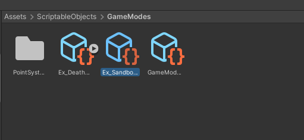
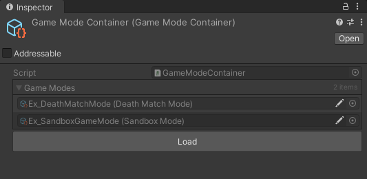
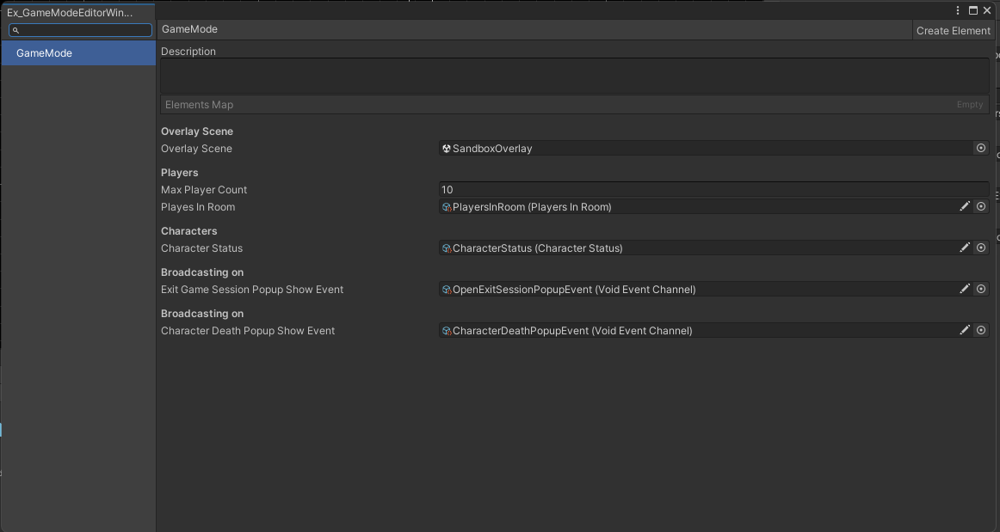
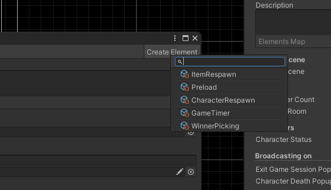
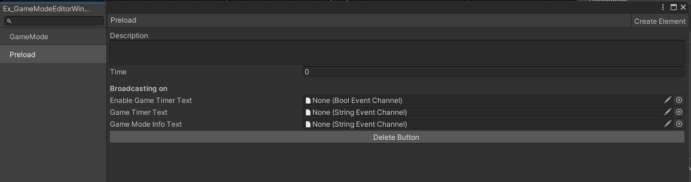

Game mode design
This chapter will explain how to create and implement the game mode.
What is a game mode in our project?
The game mode is the core system of our project. The game mode will control everything related to the game session. For example: spawning characters, loading game mode overlay, re-spawning characters, re-spawning items, etc...
So how do we use the game mode that someone created?
you can find the game modes in the Assets/ScriptableObjects/GameModes folder.

What is the Game mode Container?
The Game mode Container contains all game modes in the Assets/ScriptableObjects/GameModes folder. Press the load button to add game modes to the container.

The game mode container is being used for UI and getting Game mode using name(string).
How to edit the game mode?
Open the game mode window editor with a double click on the game mode asset that you want to open.

The default game mode window editor. You can set the max players and overlay the scene Game mode element. The only place to add and remove Game mode elements.
How to control the Game mode Element?
Click the Create Element button located in the upper right corner.

And select the element you want to add. The Game mode Element cannot be duplicated.
It looks like a Preload element was added.

You can set the Preload time and broadcast events and click the Delete button to remove by itself.
How does it work in code?
The example code shows how to use the Game Mode element in Game Mode.
// you have to set the create asset menu for this game mode.
[CreateAssetMenu(fileName = "NEW_GAME_MODE", menuName = "ScriptableObject/GameMode/Mode/NEW_GAME_MODE", order = 0)]
class NEW_GAME_MODE : GameMode
{
// Let's load the Preload element in this example.
private Preload _preload;
override IEnumerator Initialize()
{
// initialize GameMode.
yield return base.Initialize();
// get preload element
_preload = (Preload)GetGameModeElement(typeof(Preload));
}
override void StartGameMode()
{
// start game mode element
_preload.StartElement();
// add OnFinishedEvent
_preload.OnFinished.AddListener(OnPreloadFinished);
}
override void UpdateGameMode()
{
// update preload element
_preload.UpdateElement();
}
void OnPreloadFinished()
{
// start game mode timer or enable point text...
}
}
The example code shows how to create new Game mode Element.
// This sample game mode element will control item re-spawn.
class ItemRespawn : GameModeElement, IOnEventCallback
{
private ItemSpawnerController _itemSpawnerController
override void Initialize()
{
// find item spawner controller in current scene.
_itemSpawnerController = FindObjectOfType<ItemSpawnerController>();
// add photon callback target for IOnEventCallback.
PhotonNetwork.AddCallbackTarget(this);
}
override void Terminate()
{
_itemSpawnerController = null;
// remove photon callback target
PhotonNetwork.RemoveCallbackTarget(this);
}
override void StartElement()
{
// do nothing.
}
override void UpdateElement()
{
// do nothing.
}
void OnEvent(EventData photonEvent)
{
var eventCode = photonEvent.Code;
// we controls only ItemRespawnEvent and this event only received on master client.
if (eventCode != SendEventType.ItemRespawnEvent)
{
return;
}
var data = (object[])photonEvent.CustomData;
// convert received data[0] to spawner Id.
var spawnerId = (int)data[0];
// find spawner using spawner id.
var spawner = _itemSpawnerController.GetItemSpawner(spawnerId);
if (spawner != null)
{
// respawn item using found item spawner.
spawner.RespawnItem();
}
}
}